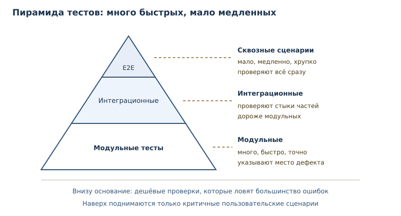
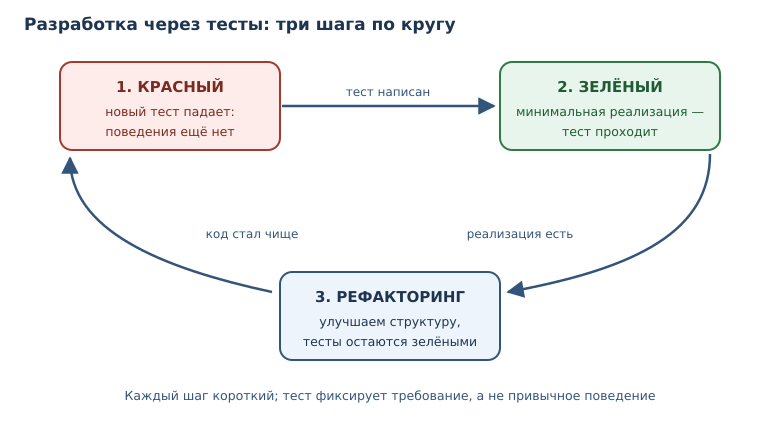

Тестирование: pytest и TDD
Как писать тесты, которые находят дефекты, чем помогают фикстуры и параметризация и как работать от теста.
В этой главе
Программа, которая «работает у меня на машине», — не аргумент. Поведение меняется от данных, порядка вызовов, версии библиотеки и настроек окружения. Единственный способ удерживать поведение под контролем — проверять его автоматически и повторяемо.
Модульный тест — автоматическая проверка небольшой единицы поведения с известным ожидаемым результатом. Тест исполняется вместе с кодом, падает при расхождении и не требует ручного сравнения. В этой главе вы научитесь писать такие проверки, организовывать их в набор, изолировать зависимости и строить работу от теста, а не от готовой реализации.
32.1 Что вы сможете после этой главы
- писать тесты на
assertи понимать, что именно они проверяют; - организовывать тесты в файлы и запускать их через pytest;
- готовить состояние через фикстуры и прогонять один тест на многих данных через параметризацию тестов;
- работать по циклу «красный — зелёный — рефакторинг»;
- отличать полезный тест от теста, который лишь увеличивает покрытие.
32.2 Модульный тест и тестовый случай
Любой тест состоит из трёх шагов: подготовка, действие, проверка. Такой порядок называют AAA — arrange, act, assert. Сначала создаём данные, затем вызываем проверяемое поведение, затем сравниваем результат с ожидаемым.
Тестовый случай — отдельная проверка: входные данные, вызов и ожидаемый результат. Один тестовый случай проверяет одну ситуацию. Если в нём пять разных вызовов и один упал, придётся выяснять, какой именно и почему.
Полезная привычка — добавлять к assert пояснение: assert total == 42, f"total={total}".
Голый assert при падении не печатает значения — только AssertionError,
поэтому отладка начинается с добавления print. Сообщение в утверждении
сразу отвечает на вопрос «что было на самом деле». pytest переписывает
утверждения и показывает сравниваемые значения сам, но собственное сообщение
всё равно полезно: оно объясняет смысл проверки.
Начнём без фреймворков: обычный assert уже умеет проверять условие и
поднимать исключение.
def add(a: int, b: int) -> int:
return a + b
assert add(2, 3) == 5
assert add(-1, 1) == 0
assert add(0, 0) == 0
print("все проверки прошли")
все проверки прошли
Если условие ложно, assert поднимает AssertionError и останавливает
выполнение.
def add(a: int, b: int) -> int:
return a - b
assert add(2, 3) == 5
AssertionError
Такой тест уже полезен: он документирует ожидание и падает при регрессии.
Но у голых assert есть недостатки. Нет общего запуска и отчёта, нет
подготовки и очистки состояния, нельзя прогнать один случай на десяти наборах
данных без копирования кода. Для этого нужен фреймворк.
32.3 pytest: соглашения и запуск
pytest — популярный фреймворк тестирования: функции test_*, assert и
богатый набор расширений. pytest не входит в стандартную библиотеку: это
внешний инструмент, который устанавливают в виртуальное окружение проекта
(глава 33). Код ниже показывает типичную структуру, но запускать его нужно в
проекте с pytest.
# tests/test_calculator.py
from calculator import add
def test_add_positive():
assert add(2, 3) == 5
def test_add_zero():
assert add(0, 0) == 0
Фреймворк сам находит файлы test_*.py, функции test_* и запускает их.
Внутри теста не нужно печатать результат: pytest перехватывает AssertionError
и показывает, какие значения сравнивались. Именно поэтому assert в тестах
предпочтительнее print: проверка автоматическая, а сообщение об ошибке
содержательное.
Пусть в calculator.py функция add по ошибке возвращает a - b. Тогда
запуск покажет:
$ pytest -q
F. [100%]
FAILED tests/test_calculator.py::test_add_positive - assert -1 == 5
1 failed, 1 passed in 0.02s
Символы в строке прогресса — это результаты: точка означает успех, F —
падение. В конце pytest перечисляет упавшие тесты и показывает расхождение.
Такой отчёт можно читать в терминале и в непрерывной интеграции.
Как выбрать, что тестировать
Тестируйте поведение, а не реализацию. Хороший тест переживает рефакторинг: если вы переписали внутренности функции, но её контракт не изменился, тест должен проходить. Плохой тест проверяет, что функция вызывает конкретный приватный метод в конкретном порядке, — он ломается от любого улучшения.
Начинайте с границ и ветвей:
- типичный случай, ради которого функция написана;
- граничные значения: ноль, пустая строка, последний элемент;
- ошибочные входные данные и ожидаемые исключения;
- ветки
if/else, которые легко забыть.
Полный перебор всех комбинаций быстро становится невыносимым, и это нормально. Тестирование не доказывает отсутствие ошибок — оно повышает уверенность в тех сценариях, которые вы посчитали важными. Выбирайте случаи по риску: там, где ошибка дорого стоит или где логика запутана, проверок должно быть больше.
Пирамида тестов
Не все тесты одинаковы. Модульный тест проверяет одну функцию и работает доли секунды. Интеграционный тест соединяет несколько частей — например, хранилище и бизнес-логику — и стоит дороже. Сквозной сценарий проходит через всю систему, как пользователь, и может занимать минуты. Смешивать их в одну кучу неудобно: набор становится медленным, а падение — неинформативным.

Пирамида задаёт пропорцию: в основании много дешёвых модульных тестов, выше — меньше интеграционных, на вершине — единицы сквозных. Такое распределение даёт быструю обратную связь: большинство ошибок ловится за секунды и с точным адресом. Сквозные тесты нужны для критичных путей — входа в систему, оплаты, сохранения заказа, — но делать их основным инструментом расточительно.
Имена и расположение тестов
Имя теста — часть документации. test_add_negative сообщает, что проверяется
сложение отрицательных чисел; test_1 не сообщает ничего. Хорошее имя
описывает ситуацию и ожидание: test_total_with_zero_discount_returns_total.
При падении именно оно попадёт в отчёт, и по нему должно быть понятно, что
сломалось, без открытия кода.
Тесты обычно складывают в каталог tests/, повторяющий структуру пакета:
tests/test_cart.py для cart.py. Такое расположение помогает найти нужный
файл и не смешивать проверки с production-кодом. Внутри файла тесты
группируют по проверяемой функции, а не по типу проверки.
Проверка исключений
Ожидаемое исключение — такая же часть контракта, как возвращаемое значение.
В pytest его проверяют контекстным менеджером pytest.raises: он проходит,
только если исключение действительно поднято.
import pytest
def divide(a: int, b: int) -> float:
if b == 0:
raise ValueError("деление на ноль")
return a / b
def test_divide_by_zero():
with pytest.raises(ValueError, match="деление на ноль"):
divide(1, 0)
match принимает регулярное выражение и проверяет, что оно найдено в тексте
сообщения; поэтому "деление на ноль" сработает и внутри более длинной
фразы. Если исключение не поднялось, pytest.raises сам провалит тест —
ручной try/except с assert в тестах нужен редко.
32.4 Фикстуры и параметризация
Многим тестам нужно одинаковое начальное состояние: временный файл, тестовая база, настроенный объект. Копировать подготовку в каждый тест плохо: она разъедется, а очистка где-то забудется.
Фикстура — подготовка и очистка состояния, переиспользуемая между тестами. В pytest фикстура объявляется декоратором и внедряется в тест по имени параметра.
import pytest
@pytest.fixture
def order():
items = ["яблоко", "груша"]
yield items
items.clear()
def test_order_not_empty(order):
assert order
Фикстура может возвращать значение или быть генератором: код до yield —
подготовка, после — очистка. Тест получает готовый объект и не думает о том,
как его создали и когда освободят. Фикстуры, нужные нескольким файлам,
выносят в conftest.py: pytest находит этот файл автоматически и делает его
фикстуры доступными всем тестам в каталоге и ниже — импортировать их не
нужно.
Встроенные фикстуры pytest закрывают частые нужды. Например, tmp_path даёт
уникальный временный каталог, отдельный для каждого теста; pytest сохраняет
каталоги нескольких последних сессий и постепенно удаляет старые:
def test_write_report(tmp_path):
report = tmp_path / "report.txt"
report.write_text("итог: 42", encoding="utf-8")
assert report.read_text(encoding="utf-8") == "итог: 42"
Тест работает с настоящей файловой системой, но не оставляет мусора и не зависит от других тестов. Это важное свойство: тесты должны проходить в любом порядке и на любой машине.
Параметризация тестов — запуск одного теста на множестве наборов входных данных. Вместо копии функции с другим литералом вы описываете таблицу случаев.
import pytest
@pytest.mark.parametrize(
("raw", "expected"),
[("0", 0), ("41", 41), (" 42 ", 42)],
)
def test_parse_age(raw, expected):
assert parse_age(raw) == expected
pytest создаст по тесту на каждую строку таблицы и покажет, какой именно набор упал. Это одновременно документация поведения и защита от регрессий.
32.5 Разработка через тесты
Разработка через тесты (TDD) — подход «красный — зелёный — рефакторинг»: сначала падающий тест, затем минимальная реализация, затем улучшение кода при зелёных тестах. Три шага короткие, и каждый имеет цель.

- Красный. Пишем тест на ещё не существующее поведение. Он падает — это доказательство, что тест действительно проверяет что-то новое.
- Зелёный. Пишем самую простую реализацию, которая проходит тест. Не самую красивую — минимальную.
- Рефакторинг. Убираем дубли и улучшаем структуру, не меняя поведения. Тесты остаются зелёными и подтверждают, что ничего не сломали.
Покажем шаг «красный» на функции нормализации телефона.
def normalize_phone(raw: str) -> str:
return raw
assert normalize_phone("+7 (999) 123-45-67") == "+79991234567"
AssertionError
Тест падает, потому что реализация возвращает вход без изменений. Теперь минимальная реализация:
def normalize_phone(raw: str) -> str:
digits = "".join(char for char in raw if char.isdigit())
return "+" + digits
print(normalize_phone("+7 (999) 123-45-67"))
print(normalize_phone("8 999 123 45 67"))
+79991234567
+89991234567
Второй случай показывает, что реализация ещё неполная: она не заменяет ведущую восьмёрку на семёрку. Добавим тест — он снова красный, — и только затем код. Так TDD не даёт забыть о граничных случаях: каждый из них сначала становится проверкой.
Полезно различать TDD и «тесты после кода». Второй подход тоже нормален: много кода пишут, чтобы понять задачу, и покрывают его тестами задним числом. Но если писать тест после реализации, легко невольно подогнать его под текущее поведение, включая ошибку. Тест, написанный до кода, фиксирует требование, а не привычку.
32.6 Покрытие, моки и регрессионные тесты
Покрытие — доля кода, исполненного тестами; полезный, но недостаточный
показатель качества тестов. Покрытие измеряют инструментом coverage.py,
обычно через плагин pytest-cov: команда pytest --cov=calculator печатает
отчёт по модулям. Сто процентов покрытия не означают ста процентов проверок:
строка может исполниться, а её результат никто не сравнит.
def divide(a: int, b: int) -> float:
if b == 0:
raise ValueError("деление на ноль")
return a / b
Покрытие полезно как диагностика: оно показывает участки, о которых тесты ничего не говорят. Если целая функция не исполнялась ни разу, это повод написать тест. Но процент сам по себе ничего не доказывает — он не отличает проверку результата от простого вызова. Поэтому покрытие смотрят вместе с качеством утверждений, а не вместо него.
Тест assert divide(10, 2) == 5.0 покрывает строку возврата, но не ветку
ошибки. Чтобы покрытие было осмысленным, добавьте тест на ValueError — и
проверьте, что исключение действительно поднимается.
Мок (заглушка) — подмена зависимости управляемым объектом, чтобы
изолировать тестируемую единицу. Если функция обращается к сети, часам или
базе, тест становится медленным и нестабильным. Мок возвращает заранее
известное значение и позволяет проверить, что зависимость вызвана правильно.
Модуль unittest.mock входит в стандартную библиотеку.
from unittest.mock import patch
def fetch_price() -> int:
return 100
def total_with_tax() -> int:
return fetch_price() * 120 // 100
with patch("__main__.fetch_price", return_value=250):
print(total_with_tax())
print(total_with_tax())
300
120
Внутри with функция fetch_price заменена заглушкой, которая возвращает
250; после выхода восстанавливается настоящая. Тест проверяет логику
total_with_tax, не завися от источника цены.
Регрессионный тест — тест, закрепляющий исправленный дефект, чтобы он не вернулся. Работают в два шага: сначала тест воспроизводит ошибку и падает, затем исправление делает его зелёным, и тест остаётся в наборе навсегда. Если закрепить тестом текущее, ещё не проверенное поведение, можно зафиксировать сам дефект — поэтому сначала решают, что правильно.
Покажем первый шаг на скидке: пользователь сообщил, что 10 % от 999 рублей дали 900 вместо 899. Тест фиксирует ожидание и падает на старой формуле:
def discount(total: int, percent: int) -> int:
return total - total * percent // 100
# сообщение пользователя: discount(999, 10) вернула 900, а должна 899
assert discount(999, 10) == 899
AssertionError
Причина в порядке округления: 999 * 10 // 100 = 99, и 999 - 99 = 900.
Округлять нужно не скидку, а итоговую долю: 999 * 90 // 100 = 899, а для
33 % — 999 * 67 // 100 = 669. После исправления функции тест становится
зелёным и остаётся в наборе: теперь он не даст вернуть старую формулу.
Исправление этой функции — упражнение 7.
32.7 Типичные ошибки
- Тест без проверки. Функция вызывает код и ничего не сравнивает: тест
проходит всегда. Каждый тест обязан содержать
assertили ожидание исключения. - Один тест на всё. Длинный сценарий с двадцатью проверками падает целиком, и непонятно, что сломалось. Лучше много маленьких тестов с ясными именами.
- Проверка реализации. Тест, завязанный на приватные методы и порядок вызовов, ломается при рефакторинге и не ловит реальных дефектов.
- Зависимость от порядка и времени. Тест, который проходит только после другого теста или зависит от текущей даты, называют нестабильным. Он хуже отсутствующего: ему перестают доверять.
- Погоня за покрытием. Сотня тестов на геттеры и ни одного на граничный случай создаёт иллюзию защищённости. Покрытие — индикатор, а не цель.
- Мок на всё. Если замокано всё, тест проверяет моки, а не программу. Заменяйте только внешние и нестабильные зависимости.
- Тест подогнан под баг. Тест, написанный после кода и закрепляющий неверное поведение, мешает исправлению. Сначала решите, что правильно.
32.8 Упражнения
1. Проверка без фреймворка
Напишите функцию is_even(number: int) -> bool и проверьте её тремя
инструкциями assert для 0, 7 и -4. Выведите строку об успехе.
2. Прогнозирование падения
Что произойдёт при запуске и почему?
def half(value: int) -> float:
return value / 2
assert half(5) == 2.5
assert half(4) == 3
print("готово")
Запишите ответ, проверьте запуском и объясните, что показывает сообщение
AssertionError.
3. Тестовый случай по шагам
Для функции clamp(value: int, low: int, high: int) -> int, ограничивающей
число диапазоном, опишите три тестовых случая по схеме «подготовка — действие
— проверка»: значение внутри диапазона, ниже границы, выше границы.
Реализуйте функцию и проверьте все три случая.
4. Параметризация без pytest
Дан список пар (вход, ожидание). Напишите цикл, который проверяет
normalize_space на каждой паре и сообщает номер упавшего случая:
cases = [(" a b ", "a b"), ("a\tb", "a b"), (" ", "")]
Реализуйте normalize_space и добейтесь, чтобы все случаи прошли.
5. Красный — зелёный
Функция slugify(title: str) -> str должна заменять пробелы на дефисы,
приводить текст к нижнему регистру и удалять лишние дефисы по краям. Сначала
напишите падающий тест для " Привет, Мир ", затем реализацию. Покажите
оба шага.
6. Ожидаемое исключение
Функция parse_percent(text: str) -> int принимает строку с процентом и
поднимает ValueError, если число вне диапазона 0–100. Напишите тест в стиле
pytest: успешную проверку и проверку исключения через
pytest.raises(ValueError, match="диапазон"). Если pytest в вашем окружении
нет, воспроизведите ту же проверку через try/except/else.
7. Регрессия
Пользователь сообщил: «Скидка 10 % на 999 рублей дала 900, а должна дать 899».
Воспроизведите дефект тестом, выясните причину и исправьте функцию
discount(total, percent), сохранив регрессионный тест.
8. Мок зависимости
Функция greeting() формирует приветствие из текущего часа, который берёт из
current_hour(). Замените current_hour моком, возвращающим 9, и
проверьте, что greeting() возвращает утреннее приветствие. Затем проверьте
вечерний вариант с часом 21.
9. Анализ покрытия
Дана функция и один тест:
def sign(value: int) -> str:
if value > 0:
return "плюс"
if value < 0:
return "минус"
return "ноль"
assert sign(5) == "плюс"
Объясните, какие ветки не исполнены и почему покрытие в 100 % здесь недостижимо одним тестом. Допишите тесты так, чтобы все возвраты были проверены.
10. Мини-проект: набор тестов
Для функции to_fahrenheit(celsius: float) -> float напишите набор проверок:
точка замерзания, точка кипения, отрицательное значение, дробное значение.
Добавьте проверку, что при нечисловом аргументе поднимается TypeError.
Оформите набор как функции test_* с assert и добейтесь успешного прогона
собственным мини-раннером.
32.9 Проверка понимания
- Чем модульный тест отличается от ручной проверки в терминале?
- Что входит в тестовый случай и почему его лучше не смешивать с другими?
- Зачем нужна фикстура, если подготовку можно написать в самом тесте?
- Как параметризация тестов помогает при отладке упавшего набора?
- Почему тест, написанный до кода, ловит ошибки лучше теста после кода?
- Что показывает покрытие и чего оно не показывает?
- В каких случаях мок полезен, а в каких превращает тест в проверку моков?
32.10 Что дальше
Тесты запускаются в проекте, а проект требует окружения, зависимостей и единых правил оформления. Следующая глава — о структуре проекта, виртуальных окружениях и инструментах качества: без них тесты негде запускать воспроизводимо. О том, как исключения проверяют в тестах, говорилось в главе 10; об аннотациях, которые дополняют тесты статической проверкой, — в главе 31. О том, как тесты встраиваются в автоматические проверки при каждом изменении, — в главе 45.